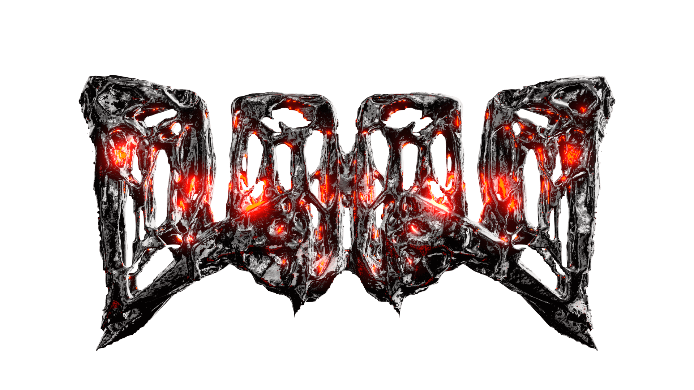

DOOD, coming out swingin with Destroyer Of Worlds! Took me a damn decade, but I finally have some artwork that feels naughty enough for this tune.
This artwork was designed procedurally, making it easy to create variations for future projects. Below are some parameters that can be easily changed, starting with... color! Not the most dramatic, but a good way to switch up the atmosphere.
A bit more fun than changing the color is changing the geometry. Tweaking a few values will generate a brand new metallic gore nest, kind of like a really fucked up kaleidoscope. Here are some variations made without any modeling or sculpting hassle.
There are a few more parameters that can be changed, and a few more I want to implement in the future, but they can wait for now.
I also wanted to take a crack at making a logo using the same procedural techniques. The DOOD brand gives a strong wink ;D to the cult classic DOOM. These logos intend to keep that reference, and make everything more evil and meaty.